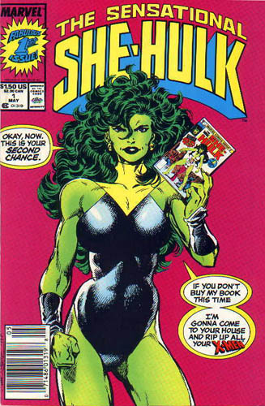

Favorite Story Line: Fantastic Four 299, She-Hulk's final appearance. She battles it out with the Thing, which seemed to be a defining moment in the character
|
 |
| Least
Favorite Story Line: Fantastic Four 293 where She-Hulk
gets absorbed by the energy sphere. Great issue, it's just she
gets taken out of action fairly soon. Her appearances were some of
the best in the book though.
|
| Little
Known Fact: She-Hulk has the potential to reach a strength
level close to her cousin, the Hulk, although her strength level
does not increase with a mood change. She worked out for years to
more than triple her current strength.
|
| Powers: Able to withstand great temperatures and pressures. She can jump thousands of feet in the air and can bench close to 75 tons. She can no longer change back due to her exposer to the radiation from the S.H.E.I.L.D. helicarrier. |